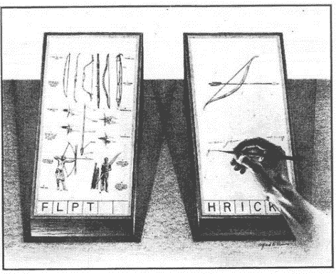

Audio-Visual In/Out
The space of projects, learning, and reflection. Its purpose is to combine meanings that will help reduce mindless consumption in exchange for a conscious life, devoid of the delusions of modernity.
AVIO has been developing since 2025, inspired by XXIIVV.
Initially, AVIO was developed as a wiki system that would combine four vectors of interest to assist in the development of video games — the center of this space. Over time, this rule (the division of meanings into four categories) was abandoned, and now it is “simply” a personal website that stores sources of inspiration, fragments of experiences, and other artifacts of human life.
The appearance and content often change, are updated, and are removed – resembling the evolution of some kind of organism. Over time, the amount of content will decrease, leaving only the concentrate needed for the subsequent processes that I'm aiming for.
Since March 2026, snapshots with major changes have been stored in the Internet archive.
Formally, AVIO can be called a MEMEX: "a living document and archive of where a person has been, as well as a tool that suggests where one could go" >

Contacts
- e-mail : aavviioo@proton.me
- telegram : @bashfr
License
All texts, audio/visual assets and projects (except for media with an indication of the source) is under BY-NC-SA4.0 license.